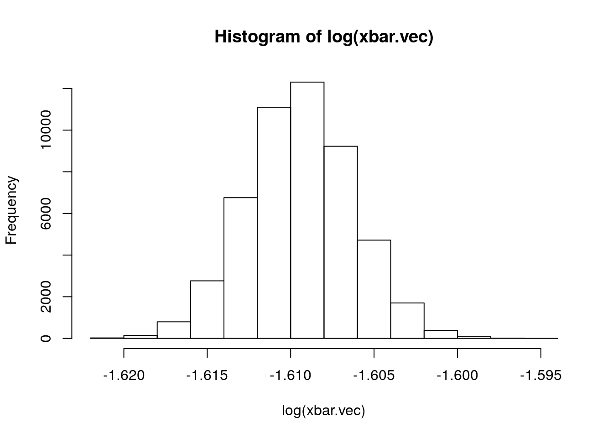

Use Monte-Carlo sampling to answer the following question:
Let \(X_1, \dots, X_n\) be Exponential(5) random variables and \(\bar{X}_n = \frac{1}{n} \sum_{i=1}^n X_i\). If \(n\) is large,
exp.rate <- 5 # Exponential distribution rate
N.mc <- 50000 # Number of Monte-Carlo samples
N.samples <- 100000
xbar.vec <- c() # Vector containing sample means
for (i in 1:N.mc) {
exp.samples <- rexp(N.samples, exp.rate) # Sample from Exp(exp.rate) N.samples times
samp.mean <- mean(exp.samples) # Calculate sample mean
xbar.vec <- c(xbar.vec, samp.mean) # append sample mean to xbar.vec
}# 1.
log_xbar.mean <- mean(log(xbar.vec)) # Approximate distribution mean
log_xbar.mean## [1] -1.609448# 2.
hist(log(xbar.vec)) # Histogram of log of sample means 
var(sqrt(N.samples) * (log(xbar.vec) - log_xbar.mean)) # Approximate distribution variance## [1] 1.003449This question can also be answered analytically using the delta method.
\(E[\log(\bar{X}_n)] = \log(1/5) =\) -1.6094379
\[\sqrt{n} \big[ \log(\bar{X}_n) - E[\log(\bar{X}_n)] \big] \Rightarrow N \Big(0, \sigma^2 [\log(\mu)']^2 \Big) = N \Big( 0, \frac{1}{5^2} * 5^2 = 1 \Big)\] Answer Choices
\(E[\log(\bar{X}_n)] = -1.61\), \(\sqrt{n} \big[ \log(\bar{X}_n) - E[\log(\bar{X}_n)] \big] \sim N(0, 1)\)
\(E[\log(\bar{X}_n)] = 0.62\), \(\sqrt{n} \big[ \log(\bar{X}_n) - E[\log(\bar{X}_n)] \big] \sim N(0, 1)\)
\(E[\log(\bar{X}_n)] = -1.61\), \(\sqrt{n} \big[ \log(\bar{X}_n) - E[\log(\bar{X}_n)] \big] \sim N(0, 0.04)\)
\(E[\log(\bar{X}_n)] = 0.62\), \(\sqrt{n} \big[ \log(\bar{X}_n) - E[\log(\bar{X}_n)] \big] \sim N(0, 0.04)\)